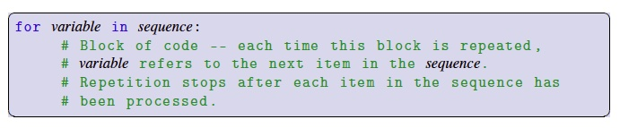

A for-loop is another kind of loop in Python that conveniently allows us to do something to each item in a sequence. For example, you might recall from Chapter 6 that strings are a compound data type comprised of a sequence of characters. A for-loop makes it very easy for us to access those characters, one at a time, and do something with each one before moving on to the next character.
For example, if we wanted to display all the characters in a string in a diagonal line on the canvas. The following program would do just that:
The executed block follows the for-loop once for each character in the string word; when the block is repeated, the variable letter refers to the next character in the string.
In general, the syntax of a for-loop consists of the word for, followed by a variable name, followed by the keyword in, followed by a sequence, followed by a colon, followed by a block:

When we do something for each element of a sequence, we say that we are iterating over the sequence.